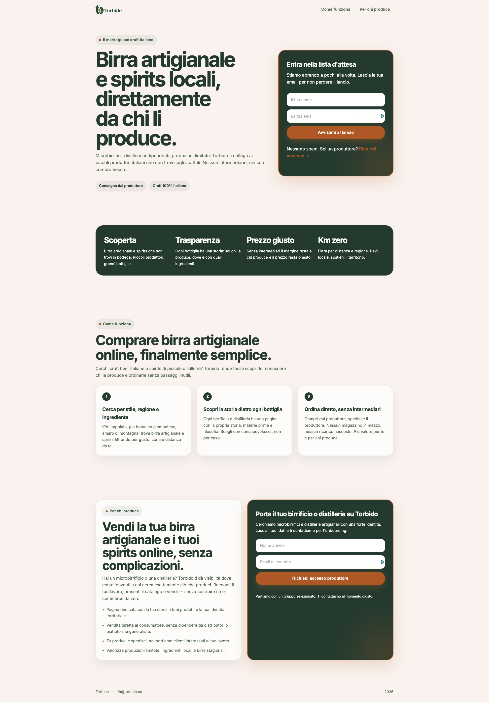

Smoke Test — torbido.co
Landing page pubblicata su torbido.co con l'obiettivo di validare la domanda prima di costruire il prodotto. Due CTA distinte: una per consumatori (lista d'attesa) e una per produttori (richiesta accesso).
Screenshot

Struttura della pagina
| Sezione | Contenuto | Obiettivo |
|---|
| Hero |
"Birra artigianale e spirits locali, direttamente da chi li produce." + badge "Consegna dal produttore" e "Craft 100% italiano" |
Chiarire la value proposition in 1 frase |
| CTA Consumatore |
"Entra nella lista d'attesa" — campo email + "Avvisami al lancio" |
Catturare email di potenziali clienti |
| 4 pillar |
Scoperta, Trasparenza, Prezzo giusto, Km zero |
Comunicare i vantaggi chiave |
| Come funziona |
3 step: Cerca → Scopri la storia → Ordina diretto |
Ridurre la complessità percepita |
| Per produttori |
Pagina dedicata, vendita diretta, tu spedisci noi portiamo clienti, valorizza produzioni limitate |
Attrarre produttori dall'altra parte del marketplace |
| CTA Produttore |
"Porta il tuo birrificio o distilleria su Torbido" — campo email + "Richiedi accesso produttore" |
Catturare lead produttori separatamente |
Setup tecnico
| Dominio | torbido.co |
| Hosting | Da verificare |
| Form consumatori | Da verificare (Formspree / Mailchimp / altro) |
| Form produttori | Da verificare |
| Analytics | Da verificare |
| Data pubblicazione | Marzo 2026 |
Metriche da tracciare
Metriche landing page
| Metrica | Target | Attuale |
|---|
| Visitatori unici / settimana |
200+ |
— |
| Conversion rate consumatori (email / visitatori) |
5-10% |
— |
| Conversion rate produttori (email / visitatori) |
2-5% |
— |
| Email consumatori totali |
200 in 4 settimane |
— |
| Email produttori totali |
15-20 in 4 settimane |
— |
| Bounce rate |
< 60% |
— |
| Tempo medio sulla pagina |
> 45 secondi |
— |
Metriche Meta Ads
| Metrica | Target | Attuale |
|---|
| CPM (costo per 1.000 impression) |
< €8 |
— |
| CTR (click-through rate) |
> 1,5% |
— |
| CPC (costo per click) |
< €0,50 |
— |
| CPL (costo per lead / email) |
< €3 |
— |
| Landing page view rate (click → visualizzazione pagina) |
> 70% |
— |
| Frequenza (impression / utente unico) |
< 3 in 7 giorni |
— |
| ROAS simulato (lead × valore stimato / spesa) |
Benchmark da stabilire |
— |
Metriche per creative
| Metrica | Uso |
|---|
| CTR per singola ad |
Confrontare le creative tra loro, spegnere le peggiori |
| CPL per singola ad |
Identificare la creative con il costo per lead più basso |
Strategia Meta Ads
Setup campagna
| Piattaforma | Meta Ads Manager (Facebook + Instagram) |
| Obiettivo campagna | Traffic → Landing page views (non link clicks) |
| Budget | €10/giorno → €70/settimana per 4 settimane = €280 totali |
| Pixel | Meta Pixel su torbido.co — eventi: PageView, Lead (submit form) |
| Conversioni custom | Email consumatore = Lead, Email produttore = Lead (separare con parametro) |
| Attribution window | 7-day click, 1-day view |
Target audience
| Ad set | Audience | Placement | Budget |
|---|
| A — Craft beer lovers |
25-50 anni, Italia. Interessi: birra artigianale, craft beer, birrificio, homebrew, Untappd, Ratebeer |
Instagram Feed + Stories + Reels, Facebook Feed |
€5/giorno |
| B — Food & drink enthusiasts |
28-50 anni, Italia. Interessi: food & wine, prodotti tipici, slow food, gin, spirits, aperitivo. Esclusi: interessi birra (evitare overlap) |
Instagram Feed + Stories + Reels, Facebook Feed |
€3/giorno |
| C — Broad (Advantage+) |
25-50 anni, Italia. Nessun interesse specifico, lasciare ottimizzare l'algoritmo |
Advantage+ placements |
€2/giorno |
Creative
Testare 3-4 varianti per ad set. Dopo 5-7 giorni spegnere le creative con CTR < 1% o CPL > €5.
| # | Formato | Visual | Copy |
|---|
| 1 |
Immagine statica |
Foto bottiglia artigianale su sfondo rustico, logo Torbido |
"Birra artigianale italiana, direttamente da chi la produce. Niente intermediari, niente ricarichi. Entra nella lista d'attesa." |
| 2 |
Carosello (3-4 slide) |
Slide 1: prodotto, Slide 2: "Dal produttore a casa tua", Slide 3: "100% craft italiano", Slide 4: CTA |
"Scopri birrifici e distillerie artigianali italiane. Ordina diretto, senza intermediari." |
| 3 |
Immagine statica (produttori) |
Birraio al lavoro / botti / fermentatori |
"Hai un birrificio o una distilleria? Vendi diretto ai tuoi clienti, senza marketplace generici. Richiedi accesso produttore." |
Canali complementari (€0)
| Canale | Status | Note |
|---|
| Post organici (Reddit, gruppi Facebook) |
Da attivare |
r/birra, gruppi FB birra artigianale, forum homebrew Italia |
| Condivisione diretta con produttori |
Da attivare |
Inviare link agli intervistati e chiedere feedback sulla pagina |
Criteri di validazione
Il smoke test è positivo se (dopo 4 settimane):
- 200+ email consumatori raccolte
- 15+ richieste produttori
- Conversion rate consumatori > 5%
- CPL medio < €3
- CTR Meta Ads > 1,5%
- Almeno 3/5 dei produttori contattati rispondono positivamente
Il smoke test è negativo se:
- < 50 email consumatori dopo 4 settimane (con €280 spesi in Meta Ads)
- 0 richieste produttori
- Conversion rate < 2% (il messaggio non convince nessuno)
- CPL > €6 (troppo costoso acquisire lead a questo stadio)
- CTR < 0,5% (creative o audience non funzionano)
- Bounce rate > 80% (la pagina non è rilevante per chi ci arriva)
Se il test è negativo, le possibili cause sono:
- Messaggio sbagliato: la value proposition non risuona → riscrivere copy, A/B test headline
- Audience sbagliata: il traffico non è qualificato → testare nuovi interessi, provare Advantage+ audience
- Creative deboli: CTR basso, hook rate < 20% → nuove immagini/video, copy diverso
- Problema non sentito: la gente non cerca birra artigianale online → pivot o stop
- Troppa concorrenza: Maltese, Beery Christmas, 1001birre già risolvono il problema → differenziare o stop
Prossimi passi
- Installare Meta Pixel su torbido.co e verificare con Pixel Helper
- Configurare evento Lead custom per i due form (consumatore / produttore)
- Verificare analytics on-site (Google Analytics o Plausible)
- Collegare i form a un foglio di raccolta (Google Sheet o Airtable)
- Creare Business Manager + Ad Account + Pagina Facebook Torbido
- Preparare 3-4 creative (immagini + 1 video breve)
- Lanciare campagna Meta Ads — €10/giorno per 4 settimane
- Dopo 5-7 giorni: review performance creative, spegnere le peggiori
- Condivisione diretta link con produttori intervistati (Devi15, altri)
- Review settimanale metriche (CPL, CTR, conversion rate, email totali)
- Decisione go/no-go a fine settimana 4